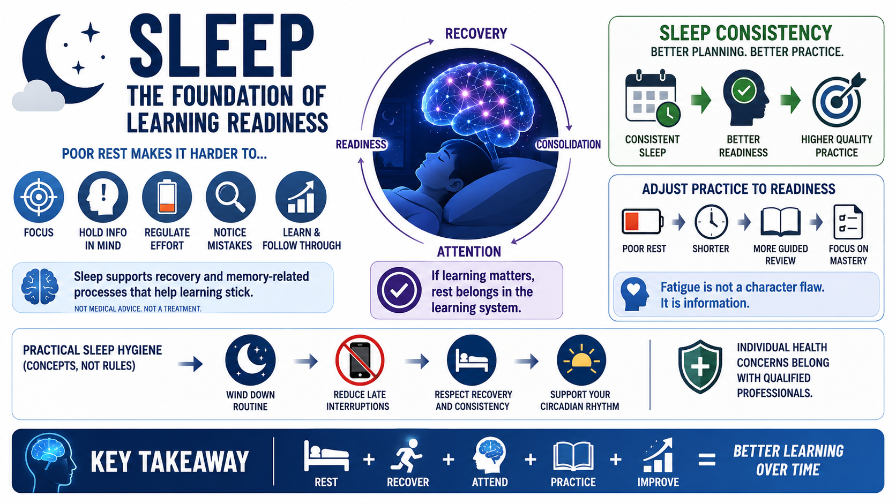

Sleep and Learning Readiness
Connecting to LMS... Progress: in progress

Narration
Sleep is a major support condition for attention, memory, recovery, and learning readiness. In everyday performance terms, poor rest can make it harder to focus, hold information in mind, regulate effort, and notice mistakes. A learner may still complete a lesson while tired, but the quality of encoding, practice, and follow-through may be weaker.
At a high level, sleep is associated with recovery and memory-related processes. This course does not make medical claims or give sleep treatment advice. The practical point is simpler: if learning matters, rest belongs in the learning system. Treating sleep as wasted time can undermine the attention and consistency that skill development depends on.
Sleep consistency can help learners plan better practice. A demanding practice session after a night of poor rest may need to be shorter, more guided, or focused on review rather than new complexity. Fatigue is not a character flaw. It is information about the learner's current readiness, and good training design adjusts difficulty when readiness is low.
Practical sleep hygiene concepts should stay general: protect a reasonable wind-down routine where possible, reduce avoidable late interruptions, and respect the relationship between recovery and learning quality. Individual health concerns belong with qualified professionals. For learning design, the key message is that sleep supports the conditions under which attention, memory, and practice can work.